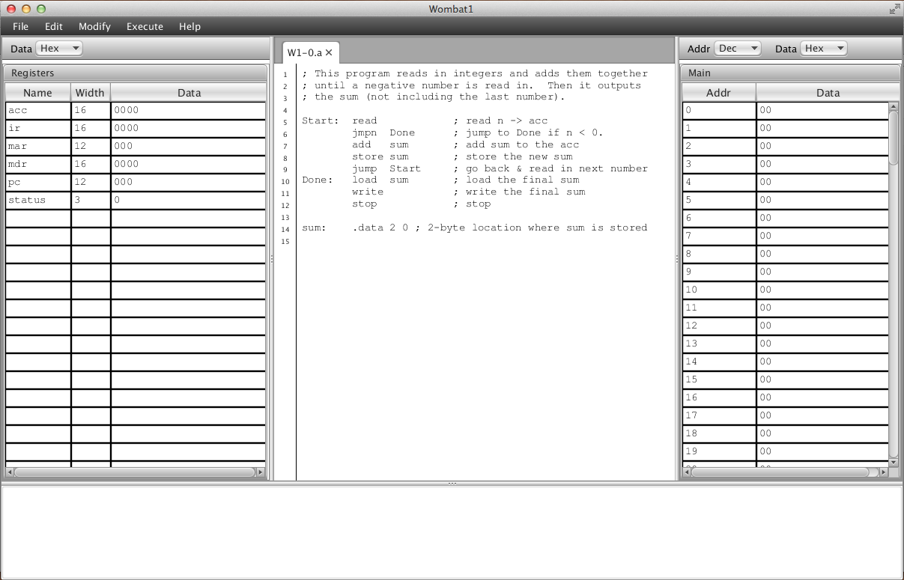
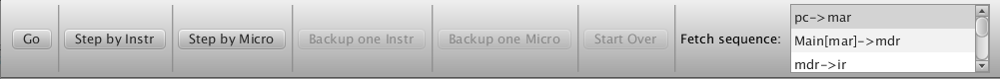

Figure 2. A Wombat1 assembly language program.
Running Programs in CPU Sim
A Tour using the Wombat1
This section demonstrates how to use CPU Sim to run a program on a
hypothetical machine. In this tour, we will (a) load into CPU Sim a
hypothetical machine "Wombat1" that has already been defined and
saved in a file, (b) open an assembly language program for the
Wombat1, (c) assemble the program, (d) load it into the Wombat1's
memory, and (e) run it.
You have presumably already successfully started CPU Sim if you are reading this help window. The window that appeared when you started CPU Sim is the main "desktop" window. Except for some dialog boxes, all windows used by CPU Sim are windows internal to the desktop window. Such windows include text windows for writing and editing assembly programs and display windows for viewing and editing the contents of registers and memory.
If you do not specify a machine on the command line when starting CPU Sim, then the title of the main display window is "New" since, if no machine is specified, a new virtual machine is created that has no registers and no memory.
Loading a virtual machine
To load a previously saved machine, choose "Open machine..." from the File menu. You will be presented with a dialog box in which you are supposed to select a file. To continue with this tutorial, select and open the text file named "Wombat1.cpu". It should be found in the SampleAssignments folder included with CPU Sim. (Note: The Wombat1.cpu file is a text file in XML format that contains the information for the Wombat1 machine.) If the machine loads without error, then the title of the main display should become "Wombat1" and two windows should appear inside the desktop (see Figure 1).

Figure 1. The main display after the Wombat1 has been loaded.
The window labeled "Registers" displays all the registers of the Wombat1 including their widths and current values. To see the values in every register displayed in binary (base 2), signed 2's complement decimal (base 10), unsigned decimal (base 10), or as hexadecimal (base 16), select the appropriate item from the popup menu labeled "Base" at the top of the window. Values in binary and hexadecimal format are displayed in four-digit groups for readability. The values in the registers can be edited in any of these display formats by double-clicking in the appropriate cell of the table, typing in a new value, and then pressing the enter or return key. The edited values will be automatically reformatted into groups of four characters if the user is working in binary or hexadecimal.
The window labeled "Main" shows the contents of the RAM named "Main". As with the registers, you can display the values in base 2, 10 (signed or unsigned), or 16, and, as with the registers, values in binary and hexadecimal format are grouped in four digit units. You can also view the addresses as positive integers in base 2, 10, or 16. Each cell (with its own address) of this RAM consists of 1 byte. Since each instruction is 16-bits in the Wombat1, it requires 2 cells of RAM to store a single instruction. The values of all cells are editable except the cells in the address column.
Note: The columns in the tables in any of these windows can be reordered by dragging the column headers left or right to a new position. The column widths can also be adjusted by dragging the line dividing the columns. In all windows except the RAM windows, the rows can be resorted by column by clicking in any column header.
The bottom panel of the main display is the Console and is used for console input and output. That is, the user can type data into the Console panel when prompted for input and CPU Sim can print data to the panel for output.
Opening an assembly language program
Now let's open a Wombat1 assembly language program. To do so, choose "Open text..." from the File menu and choose the file "W1-0.a". This file may be found in the same folder as the Wombat1.cpu file. After you have selected it, a window will appear containing the text of the file (see Figure 2). The first three lines are comments (comments begin with a semicolon). The remaining lines consist of instructions followed by comments. The instructions consist of the name of a Wombat1 machine instruction ( "load", "store" , etc.). Some of the instructions are followed by an argument and some of them have a label in front (labels end with a colon). The ".data" instruction is actually a pseudoinstruction used by the assembler to allocate memory for the variable "sum". The assembly language syntax is described in more detail in the Assembly Language Syntax section of this manual.
Figure
2. A Wombat1 assembly language program.
Before you can run this program, you must assemble it into machine language instructions that the Wombat1 can understand and then load those instructions into the Wombat1's memory. To do so, choose "Assemble & Load" from the Execute menu. (Note: If this menu item is disabled, it means there either isn't a RAM available to store instructions within, or there is no tab currently open.) You should see numbers appear in the first few rows of the table in the RAM window. If you hover your mouse over a RAM location, there will also be a Tooltip to show which instruction or pseudoinstruction this RAM location is being used by (if any). The numbers in the data column of the RAM window are the machine language instructions generated by the assembler from the assembly language program.
Running the program in the virtual machine
Now the program in main memory is ready to run. Make sure all the registers have been cleared (set to 0). If some of them are not 0, then either edit the values to make them 0 or choose "Reset everything" from the Execute menu and then choose "Assemble & Load" to reload your program. Then choose "Run" from the Execute menu. The program will begin execution with the instruction whose address is stored in the pc register (the program counter). The machine runs by repeatedly executing machine cycles. A "machine cycle" consists of the "fetch sequence" followed by an "execute sequence." The fetch sequence loads into the ir register the instruction whose address is in the pc and then decodes the instruction. The "execute sequence" executes the machine instruction that was just decoded.
At this point, the console panel should become highlighted in yellow and prompt you for input. Type a positive integer into the console panel and press the return key or enter key. Notice that the program will wait until an input value has been typed into the console. (If you are unsure of the format to use when entering data in the console window, type in "help" instead of data.) Repeat this process several times and then type in a negative number and press Enter. The program will display an output message in the console panel giving the sum of all the positive numbers you typed in. This will be followed by a second output message in the console indicating that the program has ceased execution. When execution is complete, you can see the final state of the registers and RAM in the registers and RAM windows.
If you wish to rerun the program with different input, you can proceed in two ways. You can either perform the two-step process of selecting "Clear everything" from the Execute menu, and then choose "Assemble, load, & run" from the Execute menu, or you can select "Clear, assemble, load & run" from the Execute menu. While both of these approaches perform the same function, the "Clear everything" and "Assemble, load, & run" menu items are provided in case you want to debug your programs, as explained below.
Debugging and Stepping through the code
When you are debugging assembly code, it is useful to be able to step through the execution, one instruction or microinstruction at a time, and to set break points in the code. To practice debugging using the Wombat1 and the program W1-0.a, first select "Clear everything" from the Execute menu, and then choose "Assemble & load" from the Execute menu. Next select "Debug Mode" from the Execute menu. You will see a toolbar appear at the top of the display (see Figure 3). You will also see check boxes for setting break points appear in a new column on the left side in the window where the assembly language text is displayed. When you are in debug mode, you cannot edit the machine's parameters and so the Modify menu is disabled. However, you can still edit the contents of registers or RAMs.

Figure
3. The debugging toolbar.
Let us now use debugging mode to step through the execution of the W1-0.a program. Notice that, on its right end, the debugging toolbar says that the next instruction is the fetch sequence. If you click "Step by Instr" from the toolbar, then a complete machine cycle will be executed. Do so now. The fetch sequence will be executed, which will fetch and decode the "read" instruction, and then the "read" instruction's execute sequence will be executed, causing the machine to ask you for input in the console panel at the bottom of the desktop window. After typing the input in the console and pressing return, you will see that the value that you typed is now in the acc register. You can also see that the next instruction is again the fetch sequence. In summary, each click of "Step by Instr" causes a full machine cycle to be executed, consisting of the fetch sequence followed by the execute sequence of the instruction that was fetched. As you step through the execution, note that the next machine instruction to be executed is highlighted in the assembly language code and in the corresponding row in the RAM window. If you wish, you can edit the contents of any of the registers or RAM between steps.
Both the fetch sequence and the execute sequence of the instructions that are fetched are comprised of a series of smaller, more basic steps called "microinstructions". The list on right side of the debug toolbar displays the microinstructions making up the current fetch sequence or instruction.
If you click "Step by Micro" from the toolbar, then only one microinstruction will execute, namely the microinstruction highlighted in the scrolling list on the right end of the debug toolbar. If the microinstruction that is executed changes a value in the RAM or Registers, then the data in the RAM or Registers that is changed during execution is outlined in green. When this microinstruction finishes execution, you will see that the next microinstruction that is to be executed becomes highlighted in the scrolling list on the right end of the debug toolbar, while the current machine instruction remains highlighted in the RAM window.
If the microinstruction that you execute is the final "end" microinstruction of a particular machine instruction, then the current machine cycle is ended. A new machine cycle will begin execution next with the fetch sequence. The scrolling list of microinstructions will be updated to display the microinstructions in the fetch sequence. The first microinstruction in the fetch sequence will be highlighted and the next machine instruction will be highlighted in the RAM window.
You can also return to any previous state by backing up one machine or microinstruction at a time. To do so, repeatedly choose "Backup one Instr" or "Backup one Micro" from the toolbar. No matter what microinstruction you are currently executing, if you click "Backup one Instr", the state of the CPU will revert back to the state at the beginning of the machine cycle. The "Start over" button backs you up all the way back to the state of the machine when debug mode was first entered.
To set break points in your code, check the box on the left of any line of code in the Assembly language program window. When the CPU accesses that line of code (for example, when that line is loaded into the CPU for execution), the program will halt. At that point you can inspect or change any of the values in the register or RAM windows and resume execution or step forward or backward.
Debug Mode is described in more detail in the Debug Mode section of this manual.
Finishing up
At this point, you have many options. You can continue stepping through the program one instruction or one microinstruction at a time by clicking the appropriate button or you can continue execution without stopping by clicking the "Go" button. Alternatively, you can (a) backup up all the way and run the same program again with different input, (b) create or load a new assembly language program in a text window, assemble it, and then run it, (c) create or load a new machine instead of the Wombat1, or (d) quit.